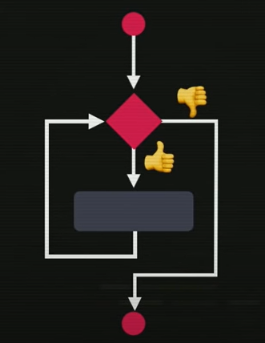

As repetições podem ser chamadas também de Laços ou Iterações.
No exemplo abaixo teremos uma função (ação feita com constância). Cada comando comerFatia() é pra uma fatia da pizza.. e fizemos isso até completar os oitos pedaços.

Na programação também é assim. Nosso objetivo é sair do ponto A pra chegar ao ponto B.
Programar é:
Para atinfir esses objetivos temos várias formas, umas delas são chamadas estruturas de controle.
A primeira estrutura de controle, e a mais fácil de todas é a sequência:
As vezes nessa sequência existem desvios/possibilidades, as chamadas condições onde temos um teste lógico onde temos duas possiblidade(verdadeiro ou falso) e de acordo com esse valor é executado as tarefas específicas:
As Repetições (ou laços) são um novo tipo de estrutura de controle. Um laço começa testando uma espressão (assim com uma condição), temos duas possibilidades, verdadeiro ou falso, só que o comportamento é diferente. Se uma condição for verdade ele irá executar o bloco, mas não irá seguir desse bloco pro ponto final, ele vai voltar pro ponto incial fazendo um looping/laço/repetição.
Voltando ele irá testar de novo aquela condição enquanto(while) ela for verdadeira é executada a tarefa e faito outro laço novamente. É feito isso enquanto essa condição for verdadeira. Se essa condição passar a ser falso o laço é quebrado e o fluxo natural é seguido, indo pro ponto seguinte.
Obs.: Existem outras estruturas de laços, mas essa é a mais comum de todas.
Usamos a palavra while e a condição.
Voltando pro exemplo da pizza, se dividisse a pizza em 16 pedaços eu precisaria usar o comerFatia 16 vezes, o que não é nada prático. Nesse caso podemos usar a estrutura while.

Enquanto temFatia eu como uma fatia, comerFatia. Isso é feito até não sobrar nenhuma fatia e minha expressão passar a ser falsa. Se não tem mais fatia ele vai sair e assim termina minha função ComerPizza().
Exemplo:
Esse estrutura é classificada como estrutura de repetição com teste lógico no ínicio. Existe um outra possibilidade, no qual posso fazer o teste lógico no fim. Primeiro eu executo o bloco e depois eu faço o teste. Se o teste lógico for verdadeiro ele faz o looping e executa o bloco novamente.
Para fazer essa outro estrutura, em vez de while alguma coisa eu vou fazer do(faça){bloco} while(). Essa outra forma chamamos de estrutura de repetição com teste lógico no final.
Resumo: as duas estruturas vistas.
Exemplo: